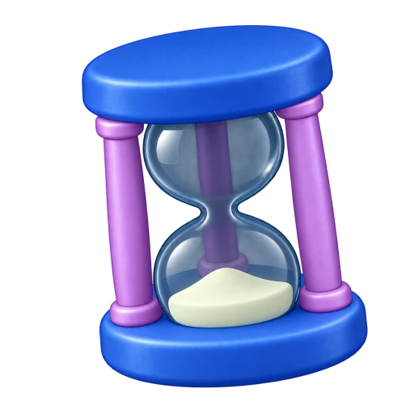

Hourglass comparison
Previous artwork and the Blender render now used in the app, viewed against the same dark surface.
Previous icon
ImageGen
At UI size · 96px
Blender render
Cycles
At UI size · 96px
Blender: shorter circular frame, shared native palette and satin materials.